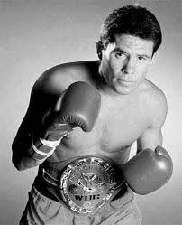
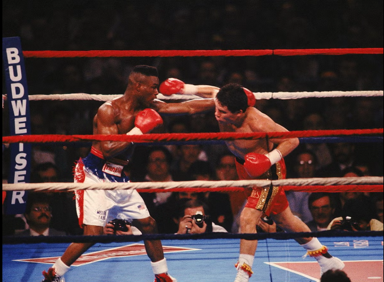
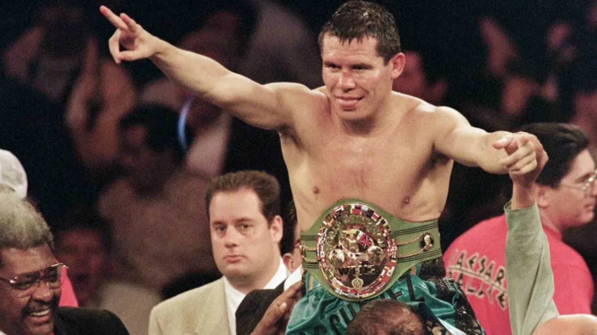

Julio Cesar Chavez, born in 1962 in Ciudad Obregón, Sonora, Mexico, began his professional boxing career in 1980 at the age of 17. Known for his relentless fighting style, Chavez made an immediate impact in the sport, quickly becoming one of the most popular and dominant fighters in the history of boxing. His early success in the ring led him to championship opportunities that would shape his legacy.
One of the most memorable fights in Chavez's career was his 1987 bout against Meldrick Taylor. Despite being behind on the scorecards, Chavez delivered a dramatic late stoppage in the 12th round, cementing his legacy as one of boxing’s greatest fighters. The fight is often cited as one of the most exciting bouts in boxing history.
In 1993, Chavez faced Pernell Whitaker in a highly anticipated fight for the WBC Welterweight title. Although many considered Whitaker to be the better technical boxer, Chavez’s heart, power, and determination made for a memorable contest that ended in a controversial draw.
Julio Cesar Chavez is widely regarded as one of the greatest boxers of all time. His career is filled with impressive accomplishments, including an undefeated streak that lasted for nearly 13 years and multiple world championships in three weight classes.
Chavez’s career was not without struggles. His greatest challenge came later in his career when he faced personal issues, including substance abuse problems and a decline in his physical condition. Despite these difficulties, Chavez continued to fight at the highest level, even after his prime, showing immense heart and resilience.
